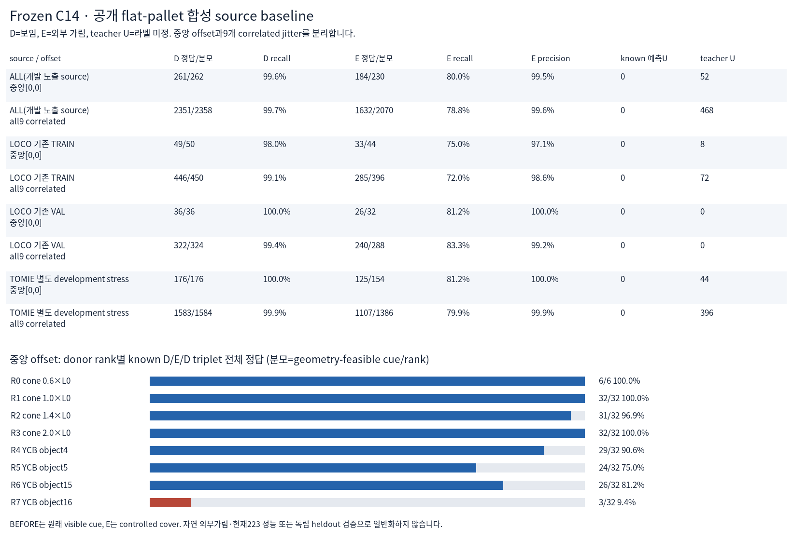
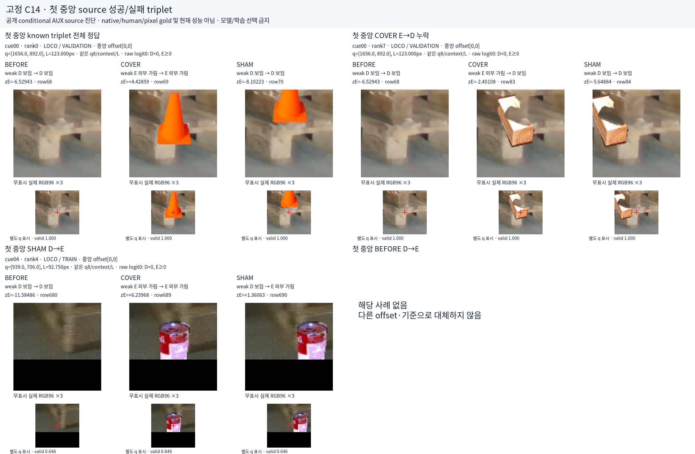
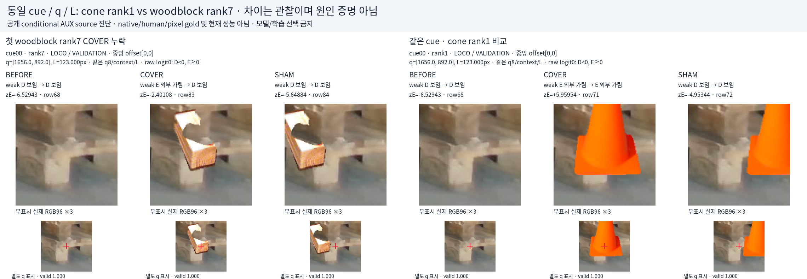
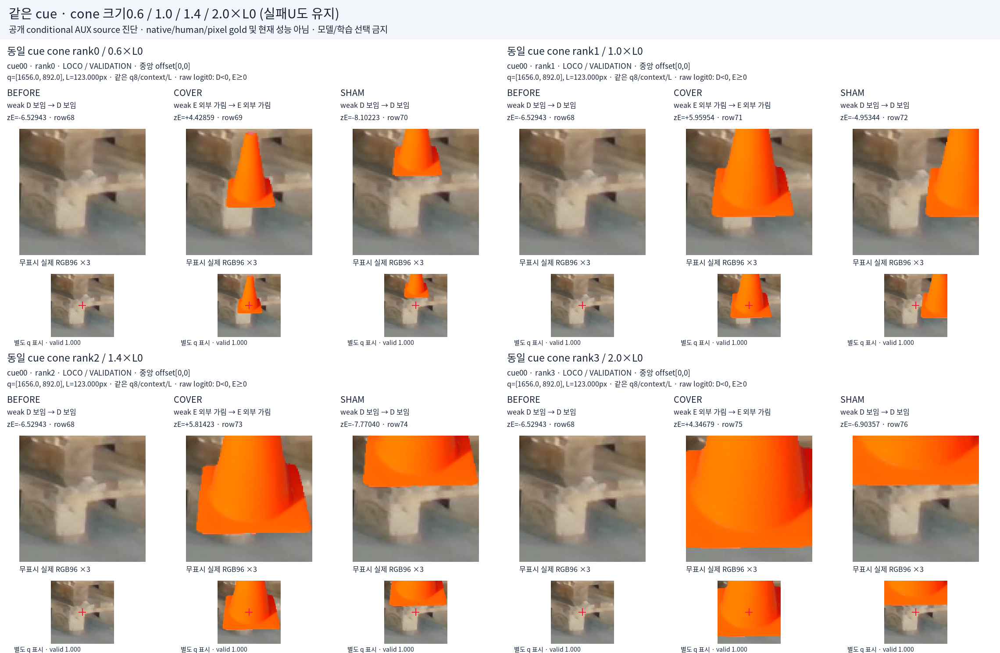

새 학습 없이 저장된 C14(logit0)를 평가했습니다. 중앙 offset 보임 D 261/262, 외부 가림 E 184/230; teacher U 52, known 예측U 0. 없는 유형: 첫 중앙 BEFORE D→E.
D=보임, E=외부 가림, U=라벨 미정입니다. U 라벨과 입력 보류는 구분합니다. Conditional AI weak cue/component visibility와 controlled native-RGB cutout을 사용하는 source 진단이며 native/human/pixel gold·현재 성능이 아닙니다. 32cue는9 native images에서 왔고9 jitters·8donor/rank derivatives는 독립 데이터가 아닙니다. LOCO는 기존 개발 노출 source, TOMIE는 하나의 development-stress episode입니다.

예측 저장 이후 원래 query/rank 순서의 첫 해당 사례만 표시했습니다. 없는 유형은 대체하지 않습니다. 무표시 RGB96는 실제 저장 입력, q crosshair는 별도 표시용 복사본입니다. 원본 q/L/labels는 바꾸지 않았습니다.

서로 다른 donor에 대한 응답 차이를 보여주며 단일 인과 기전이나 전체 transfer 성공을 증명하지 않습니다. 간단한 cone 합성의 성공을 자연 외부가림이나 기존 current 결과로 일반화하지 않습니다.

크기는 prospective 고정0.6/1.0/1.4/2.0×L0입니다. 기하 실패는 teacherU 그대로 표시하며 다른 사례로 교체하지 않습니다.

이 시각화는 사후 진단용입니다. 모델·임계값·학습 row 선택, fit, 새로운 current/V112/PnP 실행을 하지 않았습니다. 투명한 선정 기록